POO · curso 2
7. Excepciones · POO
Escrito por Adrián Quiroga Linares.
7.1 Concepto de Excepción
En la programación de los métodos se debe favoreces la separación lógica de los diferentes tipos de código:
- Funcionalidad provista por el método
- Interacción con usuarios u otros programas
- Almacenamiento y acceso a los datos
- Gestión de errores
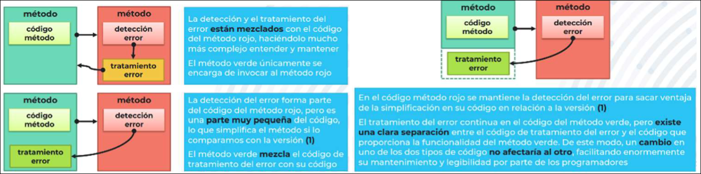
Una excepción es la ocurrencia de errores y/o situaciones de interés durante la ejecución de los métodos que proporcionan la funcionalidad del programa. El mecanismo de Java para el tratamiento de las excepciones aplica la filosofía de separar el código para la detección, comunicación y tratamiento de excepciones del código que proporciona la funcionalidad del programa.
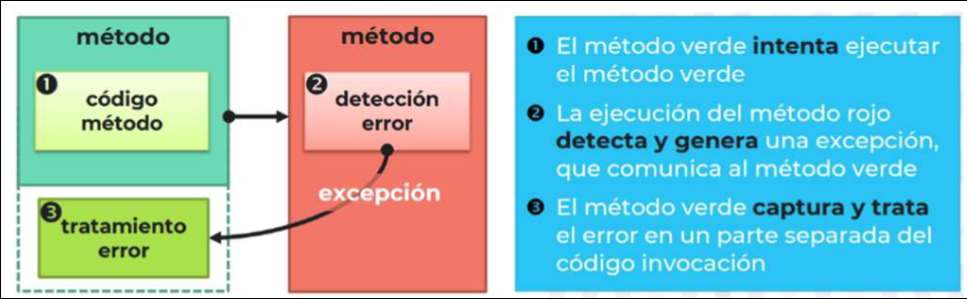
7.2 Definición de Excepción
Todas las excepciones son una clase derivada de la clase Throwable, cuyos métodos más usados son:
String getMessage():devuelve el mensaje indicado en la ocurrencia de la excepciónvoid printStackTrace():imprime por consola la secuencia de invocaciones de métodos que llevó a la ocurrencia de la excepción.
En Java existen dos tipos de excepciones:
- Excepciones chequeadas: se comprueba en tiempo de compilación en qué métodos pueden ocurrir. Los métodos en los que puedan ocurrir una determinada excepción chequeada durante su ejecución deben indicarlo explícitamente. Son clases derivadas de la clase
Exception - Excepciones no chequeadas: no se comprueba en tiempo de compilación en qué métodos pueden ocurrir. El programador debe chequear en qué métodos puede ocurrir una determinada excepción no chequeada para intentar capturarla y tratarla. Son clases derivadas de las clases
RuntimeExceptionyError
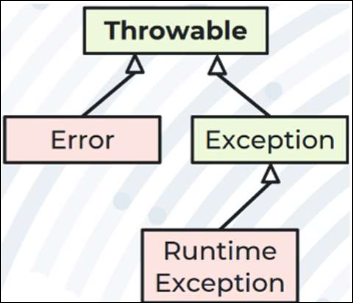
Si el error o situación de interés que provoca la ocurrencia de la excepción no impide la ejecución del programa, esta debería ser chequeada.
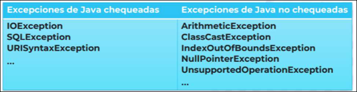
La definición de excepciones como clases derivadas de Exception le da al programador más control sobre su gestión. Estas clases se instancia en el momento en el que ocurre la excepción. Sus constructores deben invocar el constructor Exception(String message), en el que message es el mensaje con el que el programador suele explicar por qué ha ocurrido la excepción para mostrárselo al usuario.
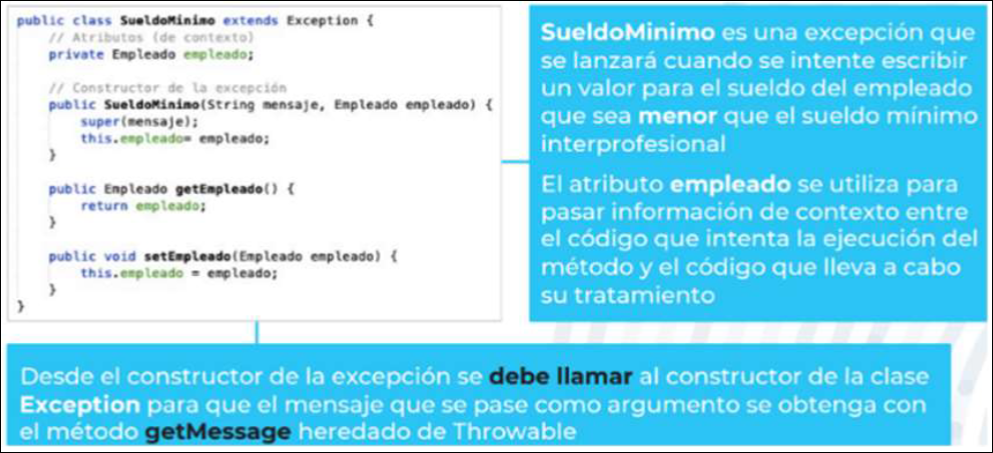
Los métodos que puedan provocar ocurrencias de excepciones se deben etiquetar para indicar explícitamente qué excepciones pueden provocar. Un mismo método puede estar etiquetado con más de una excepción, es decir, más de una subclase de Exception. Si todas las excepciones que podría provocar un método pertenecen a la misma jerarquía, sería suficiente etiquetar el método con su clase base o clases superiores a ella.
<tipo_acceso> <tipo_return> metodo (<args>) throws <excepcion1>, <excepcion2>, ...
<tipo_acceso> clase (<args>) throws <excepcion1>, <excepcion2>,...
Los constructores también pueden provocar excepciones.
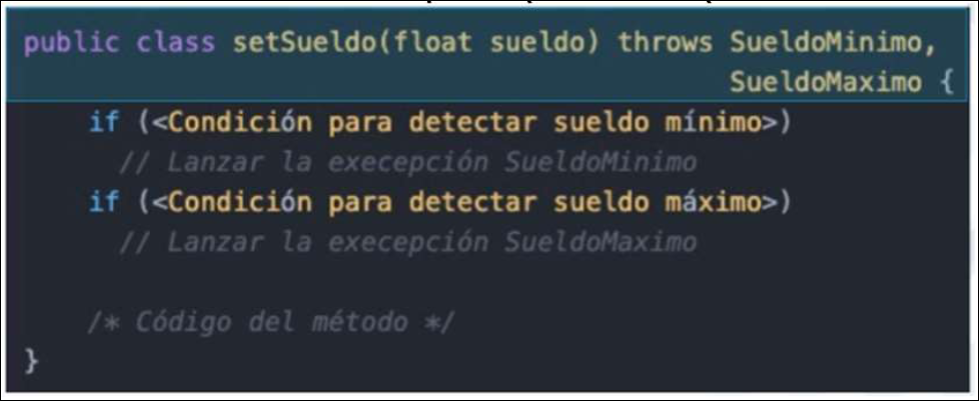
7.3 Gestión de Excepciones: Intentar
El bloque try{} indica la parte del código en el que un
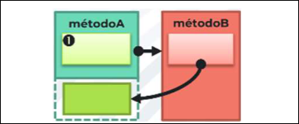
En el código del try{} como invocaciones a métodos que pueden provocar una excepción, incluso aunque sean varias invocaciones al mismo método. Sin embargo, con un único bloque try{} el código es más legible.
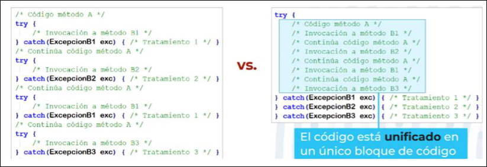
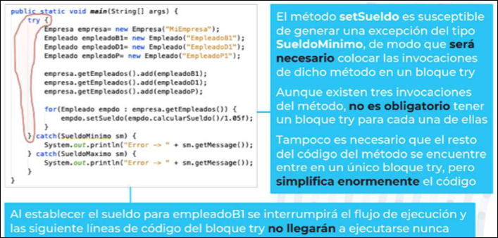
7.4 Gestión de Excepciones: Lanzar
Una vez se invoque desde
- Detección de la excepción: se especifican las condiciones en las cuales se genera la excepción
- Generación de la excepción: si se cumplen esas condiciones, se crea un objeto del tipo de excepción correspondiente. Es habitual pasar información del contexto en el que ocurrió la excepción como argumentos de su constructor, como un mensaje y/o referencias a objetos que se podrán usar en el tratamiento de la excepción
- Lanzamiento de la excepción: el objeto creado se transfiere al trozo de código en el que se trata la excepción usando
throw(excepcion). Al ejecutarthrow()se interrumpe la ejecución del. El flujo del programa continuará en el código que lleva a cabo el tratamiento de la excepción. 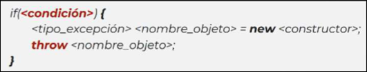
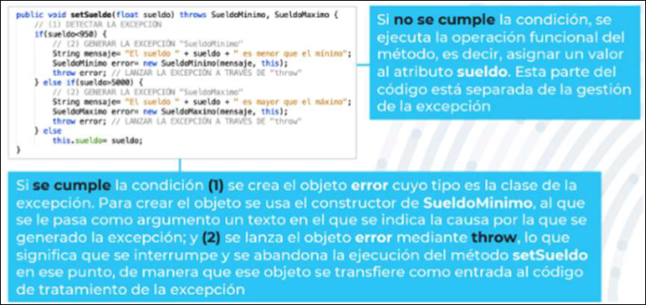
7.5 Gestión de Excepciones: Tratar
El bloque catch(<tipo> nombre){} se encarga de capturar el objeto excepción lanzado por el getMessage() para mostrar al usuario y/o grabar en un archivo el mensaje que se pasó como argumento al constructor de la excepción. El bloque catch(){} puede estar en el
Los bloques catch(){} están directamente asociados a los bloques try{}, con las siguientes restricciones:
- Un bloque
catch(){}tiene que estar asociado a un único bloquetry{} - Un bloque
try{}tiene que estar asociado, al menos, a un bloquecatch(){} - Un bloque
try()podría estar asociado a tantos bloquescatch(){}como excepciones distintas se puedan lanzar en él - Un bloque
try()podría estar asociado a menos bloquescatch(){}como excepciones distintas se puedan lanzar en él
Si varias de estas excepciones tienen la misma clase base, entonces puede definirse un único bloque catch(){} para todas ellas con su clase base.
Si varias de estas excepciones tienen el mismo tratamiento, entonces se puede usar multi-catch:
catch(<excepcion1> | <excepcion2> | ...){... tratamiento ...}
El multi-catch no añade ninguna semántica a la gestión de las excepciones, simplemente simplifica el código del bloque catch{}
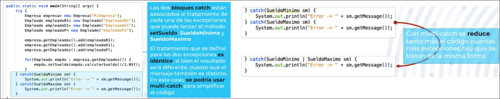
La herencia y polimorfismo juegan un papel importante a la hora de decidir qué bloque catch(){} se ejecutará cuando el
- Si el argumento del bloque
catch(){}es una clase superior a una clase, después de él no podrá existir otro cuyo argumento sea la clase o clases inferiores, pues la excepción ya se habrá capturado en el primero. Añadirlo provocaría un error de compilación.
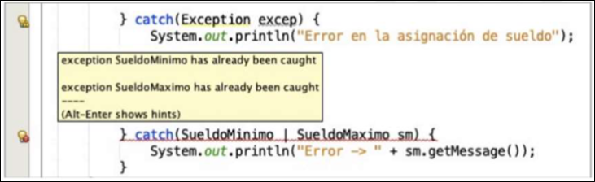
En el tratamiento de las excepciones, además de los bloques cach(){} también existe un bloque finally{} que se ejecuta siempre, independientemente de la excepción que se haya capturado o incluso si no se ha capturado ninguna.
- Un bloque
finally{}tiene que estar asociado a un único bloquetry{} - Un bloque
try{}puede estar asociado a un único bloquefinally - Un bloque
finally{}siempre va después de todos los bloquescatch(){}asociados altry{}
El bloque finally{} suele usarse para liberar recursos (por ejemplo, cerrar archivos, finalizar una conexión con una base de datos, etc.)
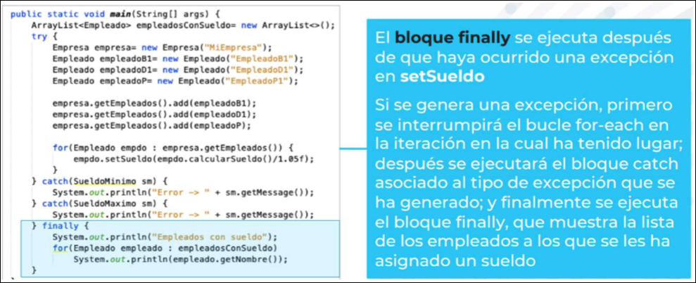
7.6 Gestión de Excepciones: Proceso Completo
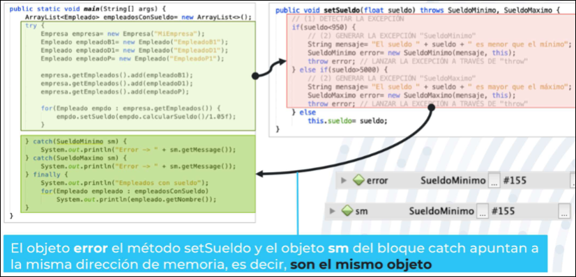
El try{}-catch(){} en el que gestione las excepciones del
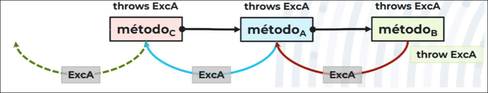
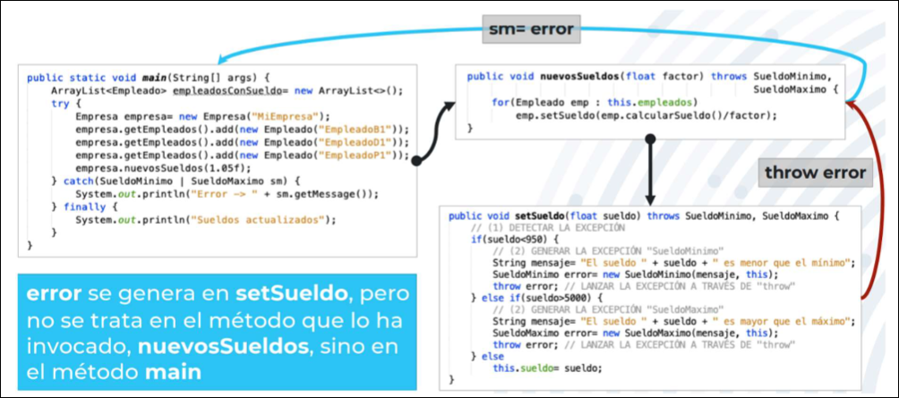